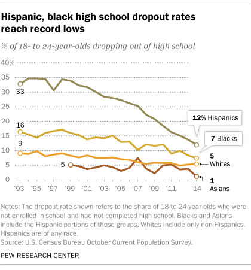

Latino Students and Their Struggle in Education
Issue:
Latinos are the largest and most rapidly-growing minority group in the United States, but they have the lowest college completion rate. While Latino high school graduation rates have improved in the last decade, according to The White House Initiative on Educational Excellence for Hispanics, only 15% of Latino adults hold a bachelor’s degree. While the number of Latino college students is increasing overall, these students continue to be overrepresented in open-access and community colleges and underrepresented in four-year institutions.
Facts on Enrollment:
- Thirty-six percent of Latinos aged 18–24 enrolled in college in 2019, decreasing the enrollment gap between Latino students and Whites to 5 percentage points since 2010.
- 275,000 Latinos (11% of all enrolled students) enrolled in postsecondary education in fall 2017, and 292,400 (10.4% of all enrolled students) enrolled in fall 2018.
- Between 2000 and 2018, Hispanic postbaccalaureate enrollment increased by 164% (from 111,000 to 292,000 students).
- College enrollment rates were higher in 2019 than in 2010 for men who were Hispanic (33% vs. 28%) and lower in 2019 than in 2010 for those who were White (37% vs. 41%). The rate was not measurably different among Hispanic and White women.
- Latino students tend to be concentrated in public institutions: 85% of Latino students enrolled in public institutions in 2016, a higher percentage than any other race/ethnicity group for that same year.
- Latinos comprised 18% of all full-time students and 23.1% of all part-time enrolled students.
Completion Rates:
- The percentage of Latinos aged 25–29 with at least an associate’s degree increased from 15% to 31% from 2000 to 2019.
- Latinos aged 25–29 who had attained at least a bachelor’s degree increased from 10% in 2000 to 21% in 2019.
- Despite increased completion rates for Latinos overall, foreign-born Latinos are less likely to have earned an associate degree or bachelor’s degree than Latinos born in the United States.
Dropout Concern:
And yet, over the past decade, the Hispanic high school dropout rate has declined and college enrollment has increased, even as Hispanics trail other groups in earning a bachelor’s degree.
This is all due to many factors that remain an obstacle to college enrollment and completion for aspiring Hispanic college students.